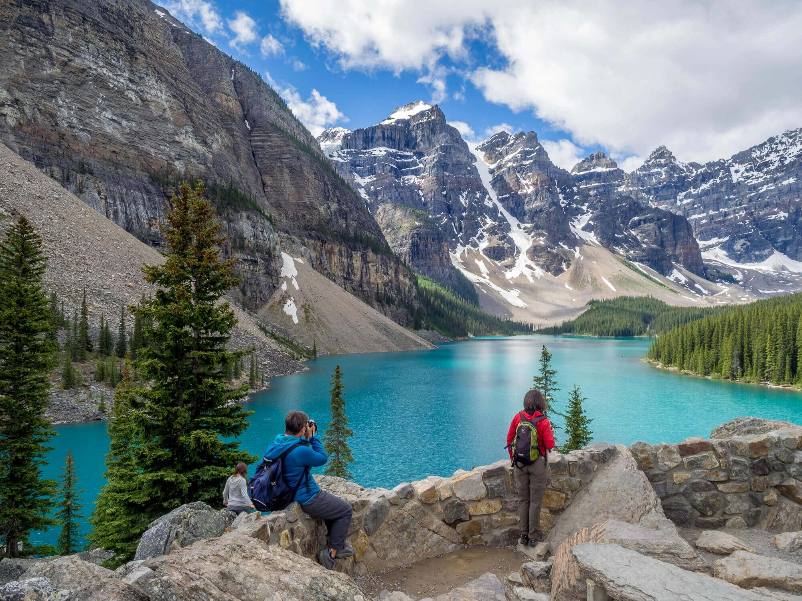

← 모레인 호수
🥾 Rockpile Trail
Moraine Lake
⭐ 모레인 호수 최고의 전망을 가장 쉽게 만나는 대표 전망 코스

📅 우리 일정
Day 3 오전 (필수 방문)
🏞 기대 풍경
🏔 Valley of the Ten Peaks
💎 에메랄드빛 모레인 호수
📸 캐나다 로키 대표 전망
🌲 Rockpile 전망대
🌄 엽서 속 그대로의 풍경
📏 기본 정보
🚶 걷는 거리
왕복 0.8km
⏱ 걷는 시간
약 20~30분
💪 난이도
매우 쉬움
📈 고도차
약 24m
🚻 편의시설
✔ 화장실 (셔틀 정류장 근처)
✔ 셔틀 승·하차장
✔ 카누 대여소
✖ 매점 없음
🎒 준비물
👟 편한 운동화
📷 카메라
🕶 선글라스
🧥 가벼운 바람막이
💡 여행 Tip
✔ Rockpile 정상은 모레인 호수의 대표 엽서 사진이 촬영되는 전망대입니다.
✔ 짧은 계단만 오르면 최고의 전망을 감상할 수 있어 대부분의 방문객이 찾는 필수 코스입니다.
✔ 오전에는 햇빛 방향이 좋아 모레인 호수의 에메랄드빛이 더욱 선명하게 보입니다.
✔ 전망대는 다소 좁으므로 사진 촬영 시 다른 여행객을 배려해 주세요.
📍 Google Maps
🗺 트레일 지도
← 모레인 호수